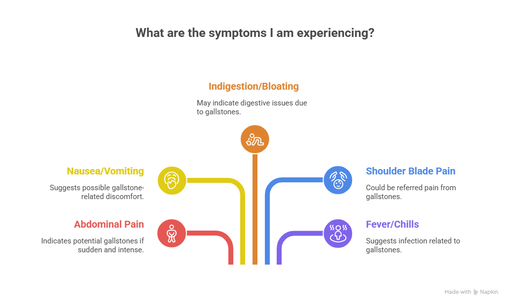
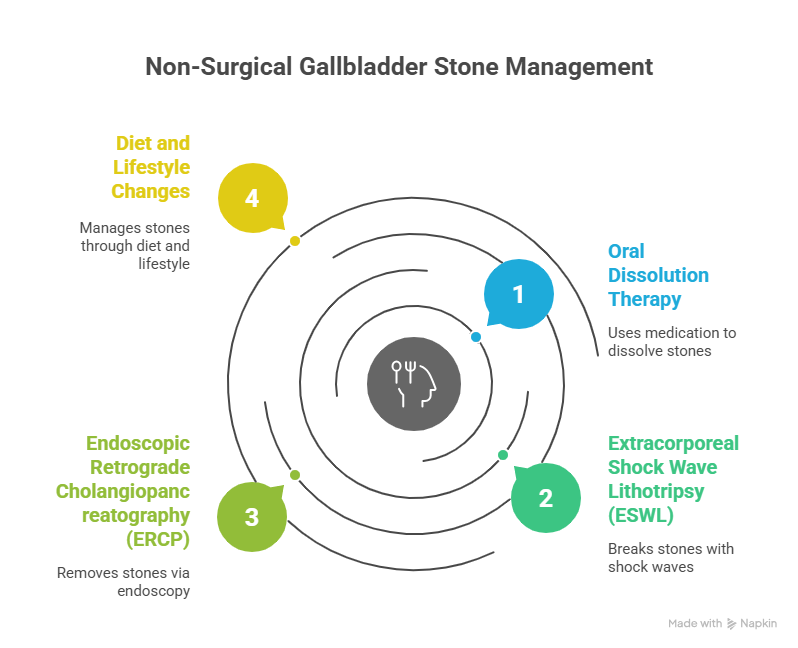
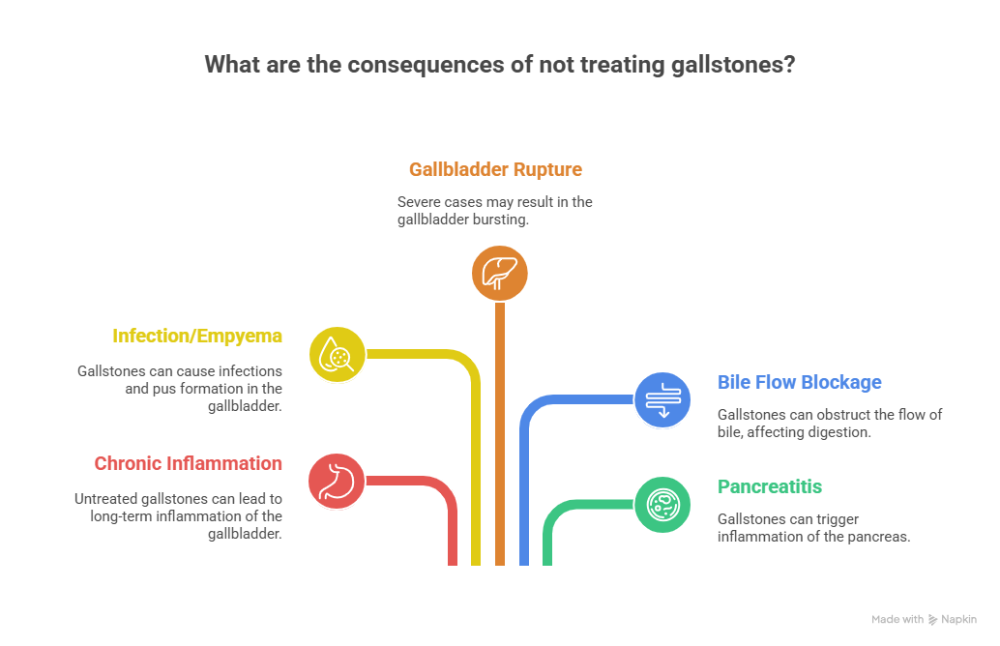

Gallstones are a common health issue affecting millions of people worldwide. These are hardened deposits that form in the gallbladder, often made of cholesterol or bilirubin. While many people may not experience symptoms, others can suffer from intense abdominal pain, bloating, nausea, and digestion problems. This raises a common question: Is gallbladder stone curable without surgery?
The answer isn’t straightforward. Some gallstones may not require treatment, while others necessitate surgical intervention. In this blog, we will explore whether it’s possible to remove gallbladder stones without surgery, what the alternatives are, and when surgery becomes necessary. We’ll also discuss how medical professionals like Dr. Atul Peters, known for offering expert Gallbladder Surgery in Delhi, approach treatment decisions.
Understanding Gallstones
The gallbladder is a small, pear-shaped organ located under your liver. It stores and releases bile—a digestive fluid that helps break down fats. Gallstones form when substances in bile, such as cholesterol or bilirubin, become imbalanced and crystallize.
There are two main types:
- Cholesterol stones (most common)
- Pigment stones (formed from excess bilirubin)
These stones can vary in size, from a grain of sand to a golf ball, and can occur singly or in multiples.
Symptoms of Gallstones

Many people with gallstones don’t know they have them. However, when a stone blocks a bile duct, it can cause a “gallbladder attack” or biliary colic. Symptoms include:
- Sudden and intense pain in the upper right abdomen
- Nausea or vomiting
- Indigestion and bloating
- Pain between shoulder blades
- Fever or chills (if infection is present)
In severe cases, untreated gallstones can lead to complications such as inflammation, infection (cholecystitis), or even a ruptured gallbladder.
Is It Possible to Remove Gallbladder Stone Without Surgery?
If you’ve been diagnosed with gallstones, you may wonder, “Is gallbladder stone curable without surgery?” The answer depends on several factors:
- The type and size of the stone
- Whether you are symptomatic or asymptomatic
- Risk of complications
- Overall health status
While surgery is the most definitive and widely recommended treatment for symptomatic gallstones, especially large or multiple stones, there are non-surgical methods that may help in some cases.
Non-Surgical Ways to Manage Gallbladder Stones

Here are some of the options available if you’re looking for how to remove stone from gallbladder without surgery:
1. Oral Dissolution Therapy
Doctors may prescribe medications like ursodeoxycholic acid (UDCA) to dissolve cholesterol-based gallstones. This method is:
- Best for small, non-calcified cholesterol stones
- A long-term process (months or even years)
- Not effective for pigment stones
- Stones may return once medication is stopped
This treatment is typically recommended for patients who are not suitable candidates for surgery.
2. Extracorporeal Shock Wave Lithotripsy (ESWL)
This is a non-invasive procedure where shock waves are used to break gallstones into smaller pieces that can pass through the bile ducts.
- Rarely used today due to limited effectiveness
- Works best with a few small stones
- Usually combined with oral medication
3. Endoscopic Retrograde Cholangiopancreatography (ERCP)
While ERCP is not a cure for gallstones in the gallbladder, it is used to remove stones stuck in the bile ducts.
- Involves passing a flexible tube down the throat to reach the bile ducts
- Often used when gallstones cause complications like jaundice or pancreatitis
- Does not remove stones inside the gallbladder
4. Diet and Lifestyle Changes
Though not a treatment, making the right dietary choices can help manage gallstone symptoms or prevent new stones from forming.
- Avoid high-fat, fried, and processed foods
- Increase intake of fiber (vegetables, fruits, whole grains)
- Maintain a healthy weight
- Avoid rapid weight loss
However, if stones already exist, diet alone cannot remove them.
Expert Gallbladder Surgery by Dr. Atul Peters!
Contact Now!
Book Your Appointment
Natural Remedies – Do They Work?
Some people look for how to get rid of gallbladder stones without surgery using home remedies such as apple cider vinegar, lemon juice, or herbal teas. While these may provide temporary relief from symptoms, there is no clinical evidence to support their effectiveness in dissolving or removing gallstones.
Relying solely on natural remedies can delay essential treatment and lead to serious complications.
When is Surgery needed?
Surgery becomes necessary when gallstones are:
- Causing frequent or severe symptoms
- Blocking bile ducts
- Leading to inflammation or infection
- Accompanied by complications like pancreatitis
The standard surgical procedure is robotic cholecystectomy—a minimally invasive method to remove the gallbladder. It is safe, has a quick recovery time, and is widely performed by specialists like Dr. Atul Peters, a trusted name for Robotic Surgery in Delhi.
What happens If You don’t treat Gallstones?

If left untreated, gallstones can lead to:
- Chronic gallbladder inflammation
- Infection or pus formation (empyema)
- Gallbladder rupture
- Blockage of bile flow
- Pancreatitis (inflammation of the pancreas)
These complications can be life-threatening and usually require emergency surgery.
Gallbladder Stone Without Surgery – Who is It for?
Non-surgical treatment may be considered for:
- Patients with small cholesterol stones
- Those who are asymptomatic
- Individuals unfit for surgery due to age or medical conditions
However, these methods are usually slow, less reliable, and carry a higher risk of recurrence. Surgery remains the gold standard for a permanent cure.
Expert Opinion – Dr. Atul Peters
For patients exploring both surgical and non-surgical options, consultation with an experienced specialist is essential. Dr. Atul Peters, known for excellence in minimally invasive and laparoscopic procedures, provides comprehensive evaluation and treatment for gallbladder-related conditions.
He helps patients understand when surgery is necessary and offers the latest techniques in Gallbladder Surgery in Delhi, ensuring faster recovery and minimal discomfort.
Conclusion
So, is gallbladder stone curable without surgery? In some cases, yes—but only under specific conditions and usually with limited success. While medical treatments and lifestyle changes may help manage symptoms or dissolve certain types of stones, they are not always effective and do not work for everyone.
Surgery, especially laparoscopic removal of the gallbladder, remains the most reliable and long-term solution for painful or complicated gallstones. If you’re experiencing symptoms or have been diagnosed with gallstones, it’s best to consult a specialist like Dr. Atul Peters to explore the most appropriate treatment path.
Frequently Asked Questions
Can Gallbladder stones be treated without surgery?
How long does it take for oral medications to dissolve gallstones?
Is there any diet that can dissolve gallstones?
What are the risks of avoiding gallbladder surgery?
Can I live without my gallbladder?
Recommended Further Reading
Have Personal Health Questions?
Consult with Dr. Atul Peters and our expert multidisciplinary team at Max Smart Super Speciality Hospital, Saket, New Delhi.
Book Your Consultation